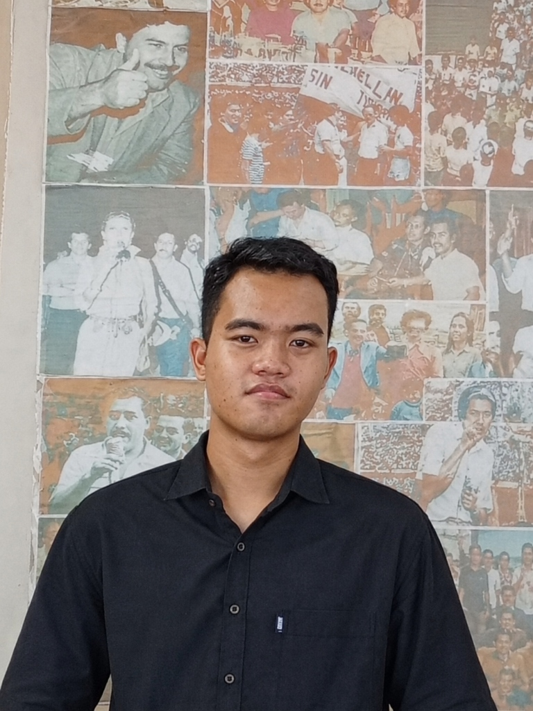

🧪
Manual QA Testing
Pengujian fungsional secara manual berdasarkan skenario.
- • Blackbox Testing
- • Test Scenario & Test Case
- • Expected vs Actual Result
- • Bug Reporting
Fokus utama
Portofolio · Internship
Mahasiswa D4 Sistem Informasi Bisnis Politeknik Negeri Malang yang memiliki ketertarikan pada teknologi informasi, analisis sistem, pengujian perangkat lunak, proses bisnis, dan pengelolaan data. Melalui proyek perkuliahan, saya memperoleh pengalaman memetakan alur sistem, menyusun dokumentasi, menguji fitur, serta menggunakan SQL dan Excel pada tingkat dasar.
Area kemampuan
Menguji fungsi aplikasi berdasarkan skenario dan hasil yang diharapkan.
Memahami alur proses, logika fitur, dan kebutuhan fungsional.
Pemahaman SQL dasar serta menyusun dokumentasi pengujian menggunakan Excel/Spreadsheet.
01 · Tentang saya

Arsya Fikri S.
D4 Sistem Informasi Bisnis
Ketertarikan saya pada bidang teknologi berawal dari mata kuliah basis data. Dari sana saya mulai mempelajari SQL dan pengolahan data menggunakan Excel dasar untuk pencatatan dan kebutuhan pengujian. Dalam proyek, saya lebih menikmati memeriksa fitur yang sudah dibuat, menjalankan pengujian, dan mencari bagian yang belum sesuai dengan alur atau kebutuhan sistem.
Saya terbiasa bekerja dalam tim, mengikuti pembagian tugas, berdiskusi, dan menyampaikan temuan kepada rekan atau project manager. Saya juga tertarik membuat Activity Diagram dan Flowchart untuk membantu memahami proses. Saya masih mengembangkan kemampuan pada requirement gathering, UML lanjutan, API testing, dan coding. AI saya gunakan sebagai alat bantu belajar, lalu saya tetap memeriksa dan memahami hasil yang digunakan.
“Memastikan fitur berjalan sesuai skenario, membandingkan hasil aktual dengan hasil yang diharapkan, lalu menelusuri alur sistem untuk menemukan hal yang perlu diperbaiki.”
02 · Kemampuan
Saya mengembangkan kemampuan lintas area Sistem Informasi melalui proyek perkuliahan, mulai dari analisis proses, pemodelan, pengujian fungsional, hingga pengelolaan data dasar.
Pengujian fungsional secara manual berdasarkan skenario.
Fokus utama
Meninjau alur dan logika fitur serta mengidentifikasi bagian yang belum sesuai.
Kemampuan pendukung
Menggambarkan alur proses agar mudah dipahami dan dikomunikasikan.
Dasar–praktik proyek
Pemahaman dasar basis data dan pemeriksaan konsistensi data.
Dasar
Catatan: Postman dan automated testing belum saya cantumkan sebagai kemampuan karena belum menjadi tools yang saya kuasai.
03 · Pengalaman proyek
Berikut proyek kelompok yang pernah saya ikuti. Peran dan kontribusi ditulis berdasarkan pekerjaan yang saya lakukan, bukan keseluruhan pekerjaan tim.
01
Peran: System Flow & Functional Validation
Sistem pengelolaan laboratorium kampus yang mencakup modul Sarpras, Layanan, dan Operasional Peminjaman.
Dokumen pendukung diagram/laporan proyek ini sudah tidak tersedia. Ringkasan ini menjelaskan pengalaman dan kontribusi, bukan menampilkan dokumen yang hilang.
02
Peran: Workflow Analyst & Manual QA
Aplikasi pemesanan lapangan olahraga yang mendukung proses booking dan pengelolaan jadwal operasional oleh pemilik lapangan.
Dokumen pendukung yang tersedia
Dokumen Activity Diagram LapangKu tersedia lengkap.
03
Peran: System Logic Analyst & Manual QA
Sistem penyewaan perlengkapan outdoor dengan proses katalog, pemesanan, transaksi, operasional kasir, pengembalian, dan pengelolaan unit.
Dokumen pendukung yang tersedia
Dokumen Activity Diagram TENDAKU tersedia lengkap.
04 · Dokumen pendukung
Berikut adalah arsip dokumen diagram alur proses sistem yang saya susun pada proyek LapangKu dan TENDAKU. Seluruh pemodelan tersedia lengkap dalam format PDF dengan path relatif yang siap diakses maupun diunduh.
Dokumentasi alur proses pemesanan lapangan olahraga digital yang memetakan tahapan transaksi dan operasional secara runtut.
Cakupan Alur Sistem:
Pemodelan proses bisnis penyewaan tenda dan perlengkapan outdoor, dari pemesanan sewa hingga prosedur operasional di lapangan.
Cakupan Alur Sistem:
Dokumen pendukung Web Lab atau proyek lain yang sudah hilang tidak dicantumkan sebagai lampiran. Pengalaman proyeknya tetap dapat dijelaskan melalui ringkasan kontribusi dan repository yang tersedia. Seluruh file PDF di atas merupakan dokumen nyata hasil pengerjaan proyek kuliah.
05 · Pengalaman pengujian
Contoh pengalaman menyusun dokumentasi pengujian untuk sistem rental perlengkapan outdoor.
Test scenario dalam dokumen
35
Jumlah skenario yang tercatat pada dokumentasi.
Test case dalam dokumen
65
Jumlah kasus uji yang tercatat pada dokumentasi.
Test case tersusun mencakup prasyarat, langkah pengujian, serta perbandingan antara hasil yang diharapkan (expected result) dan hasil aktual sistem dengan evaluasi status Pass/Fail. Meskipun cakupan pengujian masih terus berkembang dan belum sepenuhnya sempurna, seluruh proses terdokumentasi secara transparan pada spreadsheet terlampir.
06 · Kontak
Saya fokus dan siap berkontribusi pada posisi magang Quality Assurance (Manual QA Tester) maupun Junior System Analyst. Saya ingin belajar dari tim, mengembangkan kemampuan pengujian dan pemodelan alur sistem, serta menjalankan tanggung jawab dengan teliti.